Caso 009 · Pedro Livni · 2018 · oficinas (renovación de edificio existente)
Lectura literal. Las líneas son muros y forjados: un volumen de varias plantas (líneas horizontales a intervalos regulares) con un plano denso de trazos verticales paralelos en un lado (una piel de lamas o un muro lamelar) y dos o tres diagonales gruesas que cruzan el interior de un nivel a otro (escaleras o rampas). La planta sería un bloque único con una escalera inclinada en el centro.
Lectura diagramática. Las horizontales son niveles que no se cierran: dejan pasar la luz entre ellas. Las diagonales son recorridos que unen niveles en un vacío, no un núcleo escondido. El rayado vertical es un filtro de luz y de calle, un límite que tamiza. Idea: el edificio se entiende como una calle vertical iluminada, sostenida por un marco ya existente, con una piel lamelar hacia la calle.
Proyecto. Se conserva el marco estructural existente (medianeras, forjados y pilares) y se rompe el bloque con un patio abierto transversal de 7,0 × 10,4 m en el centro de la parcela. Tres tramos de escalera cruzan el patio en diagonal y lo convierten en el espacio social del edificio. Al norte, hacia la calle, la fachada es un muro cortina protegido por lamas verticales. El bloque frontal baja a PB+2 para que el sol llegue al patio y a una terraza-pérgola. El bloque posterior sube a PB+3.
Supuestos declarados (el encargo no los fija): frente de la calle orientado al norte; edificio existente de 5 plantas de 3,60 m con pórticos de hormigón (pilares de 40×40 en el eje longitudinal y medianeras portantes) y forjado unidireccional de 22 cm; parcela de 11 × 41 m, con los 3 m últimos como patio trasero libre; a comprobar todo en un levantamiento.
| 1. Patio central + escalera diagonal (ELEGIDO) | 2. Hendidura lateral junto a medianera | 3. Calle interior inclinada, plataformas a medios niveles | |
|---|---|---|---|
| Lectura | Mixta (literal + diagramática) | Literal | Diagramática: cuestiona que las plantas sean planos apilados horizontales |
| Organización | Dos bloques y un vacío central; pasarelas laterales | Un solo bloque, franja de luz de 3 m a un lado | Un solo bloque; rampa-escalera continua y 8 plataformas |
| Programa (1.000-1.600 m²) | Cumple (1.256 m² construidos) | Cumple, pero oficinas de solo 8 m de fondo útil en un flanco | Pierde superficie en rampas (~15 %); salas y oficinas difíciles de repartir |
| Clima / luz | El patio ilumina el centro; sol de invierno en el bloque posterior y en la terraza | Luz solo por un lado; el resto depende de la fachada | Luz por fachadas extremas; interior profundo |
| Normativa (incendio, accesibilidad) | Dos escaleras protegidas, ascensor, pasarelas a nivel | Un recorrido lineal largo; evacuación aceptable | Rampas largas con pendiente excesiva; evacuación compleja |
| Conservación de la estructura | Alta: solo se demuele el hueco del patio | Media | Baja: obliga a demoler casi todos los forjados |
Se descarta el 2 porque deja el patio como una grieta sin uso y las oficinas con una sola fachada útil. Se descarta el 3 porque la pendiente de la rampa (8 %) y la pérdida de superficie no encajan con un edificio entre medianeras de 11 m de ancho. El 1 no es el más convencional: obliga a demoler 218 m² de forjado, pero ofrece luz cenital a las plantas del centro y una escalera social.
| Exigido | Propuesto | Cumple / desviación |
|---|---|---|
| Espacios de trabajo flexibles, con luz y ventilación naturales (nº a definir) | Oficinas abiertas: 2 × 79,0 m² (P1, P2 frente) · 3 × 101,9 m² (PB, P1, P2 fondo) · 1 × 48,2 m² (P3). Total 6 unidades, 508 m² | Cumple. Todas tienen fachada a calle, a patio o al fondo |
| Salas de reuniones de distinto tamaño | 3 × 17,2 m² (12 personas; PB, P1, P2) · 3 × 32,4 m² (24 personas; P1, P2, P3). Total 6 | Cumple (dos tamaños) |
| Recepción con acceso accesible desde la vía pública | 1 × 79,0 m² en PB, a nivel con la calle, puerta doble de 2,00 m | Cumple |
| Aseos y servicios según normativa | 4 × 17,2 m² (frente: PB, P1, P2, terraza) · 4 × 16,8 m² (fondo: PB, P1, P2, P3). Cada bloque con cabina accesible de 1,95 m | Cumple |
| Zona de descanso o encuentro, con espacio exterior o vegetación | Comedor-descanso 52,5 m² (P3) + terraza-pérgola 96,2 m² + patio-jardín 72,8 m² con árbol | Cumple |
| Circulación vertical accesible (escalera y ascensor) | 1 ascensor (hueco 1,80 × 2,10 m) + escalera protegida E1 + escalera de emergencia E2 + escalera social del patio (3 tramos de 1,40 m) | Cumple. Un solo ascensor: se acepta por el tamaño de 1.256 m²; accede a todos los niveles incluida la terraza por pasarela |
| Aparcamiento (opcional) | No se prevé | Decisión de proyecto: con 11 m de frente no cabe una rampa sin sacrificar la recepción y el patio |
| Instalaciones y almacenaje | Instalaciones 16,0 m² y almacén 15,6 m² (PB), más cubierta técnica | Cumple |
| Superficie construida 1.000-1.600 m² | 1.256 m² construidos (1.072 m² útiles) | Cumple |
| Alineación con el frente; ocupación alta con patios que ilumine y ventile | Fachada alineada; ocupación ≈ 83 % (patio central 72,8 m² y patio trasero de 3 m) | Cumple |
| Accesibilidad universal, incendio y evacuación | Pasarelas y recepción a nivel; 2 escaleras protegidas; recorridos de evacuación ≤ 25 m | Cumple (a verificar con la normativa local) |
| Mejorar la relación con la calle e identidad contemporánea | Planta baja de vidrio con recepción visible, lamas verticales de aluminio y madera, terraza al frente | Cumple |
| Decidir qué se conserva, demuele y añade | Ver apartado 4 | Cumple |
Muro cortina de aluminio con rotura de puente térmico y vidrio DVH 6+12+6 bajo emisivo; antepechos de fibrocemento con lana mineral de 80 mm; lamas verticales de aluminio anodizado color madera claro cada 60 cm; suelo técnico de 10 cm y falso techo con plenum de 30 cm; cubierta invertida con XPS de 100 mm y deck de madera en la terraza; cubierta verde extensiva en el cuerpo posterior; interiores blancos y cálidos, madera clara en pérgola y mobiliario. Vegetación: árbol de copa ancha en el patio y plantas en terraza y vestíbulo.
Clima templado húmedo con verano cálido y sol de mediodía al norte. La fachada norte recibe sol alto en verano y bajo en invierno: las lamas verticales y el vidrio de baja emisividad controlan el deslumbramiento; el sol de invierno entra por el patio al bloque posterior, porque el frente baja a PB+2. Ventilación cruzada natural entre calle, patio y fondo; el patio actúa de chimenea térmica en verano con aberturas en el casetón. Cubierta verde y árbol reducen la isla de calor. El aislamiento (U muro ≈ 0,35 W/m²K) y la inercia del forjado existente estabilizan la temperatura.
Acceso a nivel desde la calle (puerta doble de 2,00 m). Itinerario accesible continuo: recepción → patio → pasarelas → ascensor, a todos los niveles. Cada bloque de aseos incluye cabina accesible con giro de 1,50 m. Evacuación por dos escaleras protegidas: E1 (en el fondo, con ascensor y vestíbulo previo) y E2 (frente, con salida directa a la calle). Recorrido máximo estimado desde cualquier puesto ≈ 20 m hasta una escalera. Las pasarelas ofrecen un segundo itinerario entre bloques. Ocupación estimada: ≈ 105 personas (10 m²/persona).
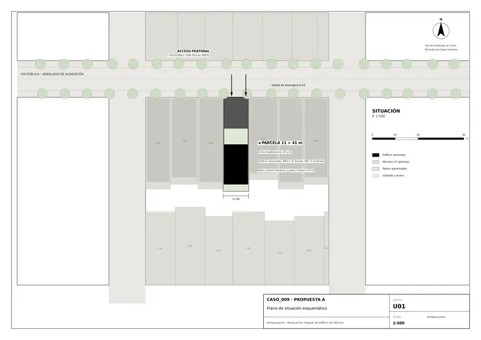
U01 · Plano de situación esquemático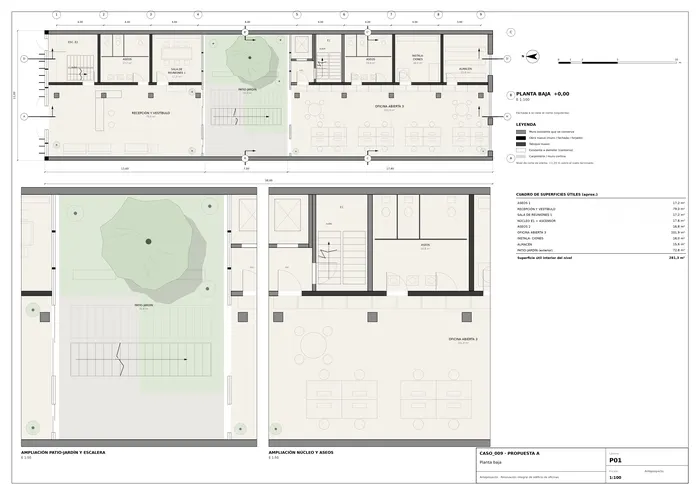
P01 · Planta baja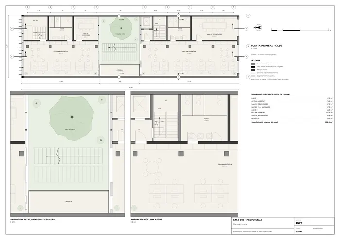
P02 · Planta primera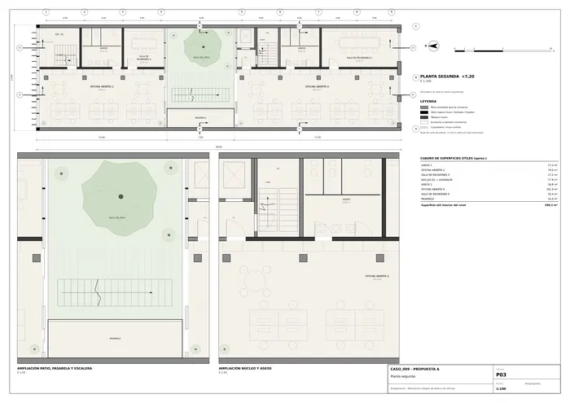
P03 · Planta segunda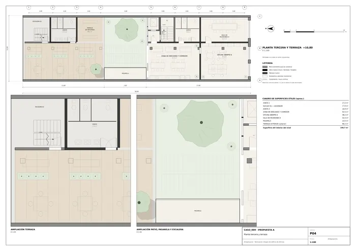
P04 · Planta tercera y terraza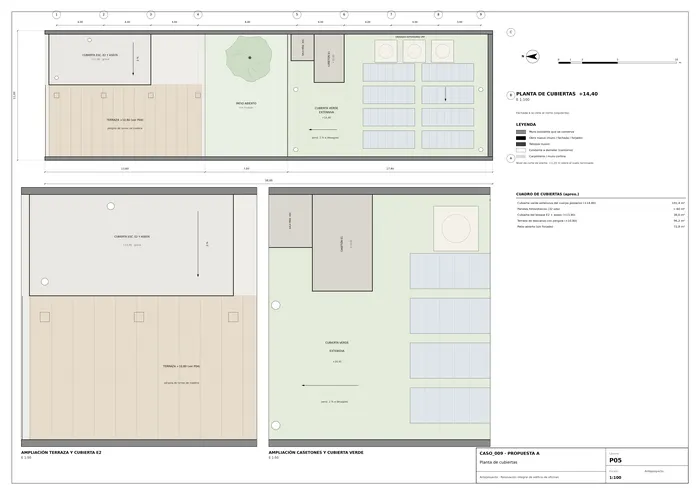
P05 · Planta de cubiertas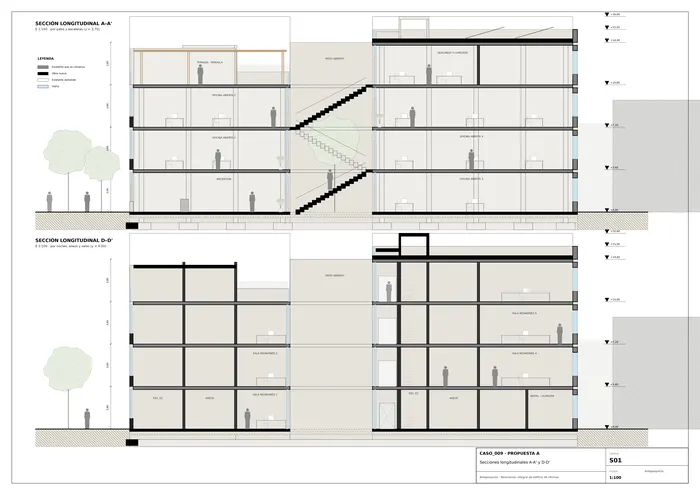
S01 · Secciones longitudinales A-A' y D-D'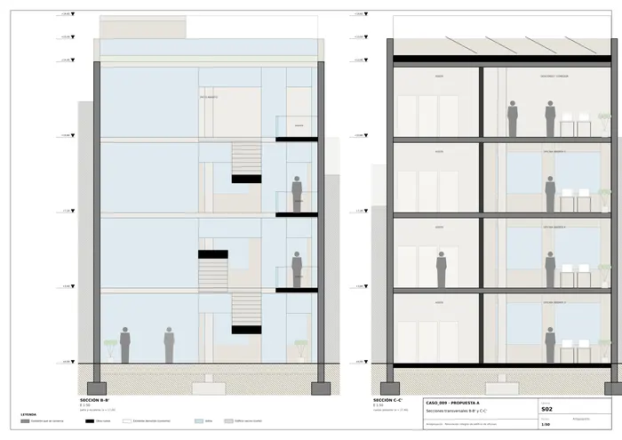
S02 · Secciones transversales B-B' y C-C'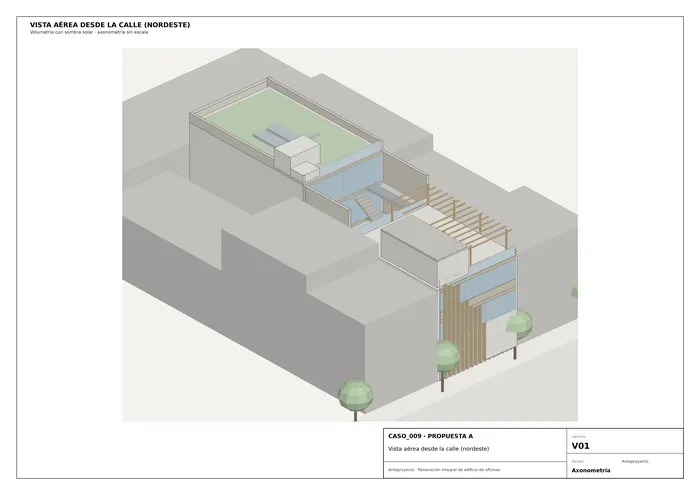
V01 · Vista aérea desde la calle (nordeste)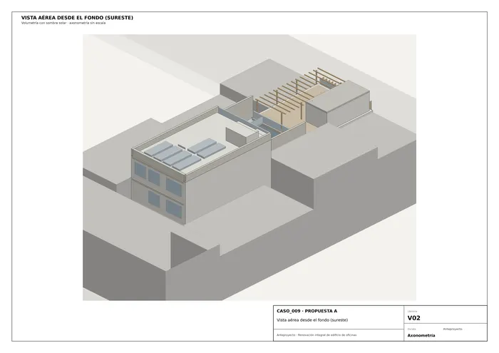
V02 · Vista aérea desde el fondo (sureste)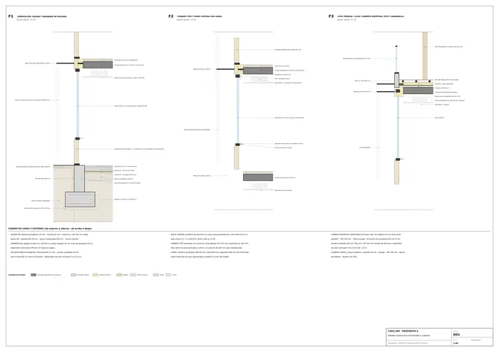
D01 · Detalle constructivo de fachada y cubiertaMemoria de la propuesta tal como la entregó el sistema. Se han omitido las notas internas del proceso (revisiones, control de reconocimiento y referencias a archivos de trabajo).